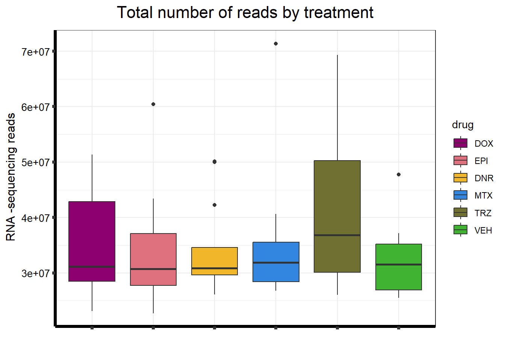
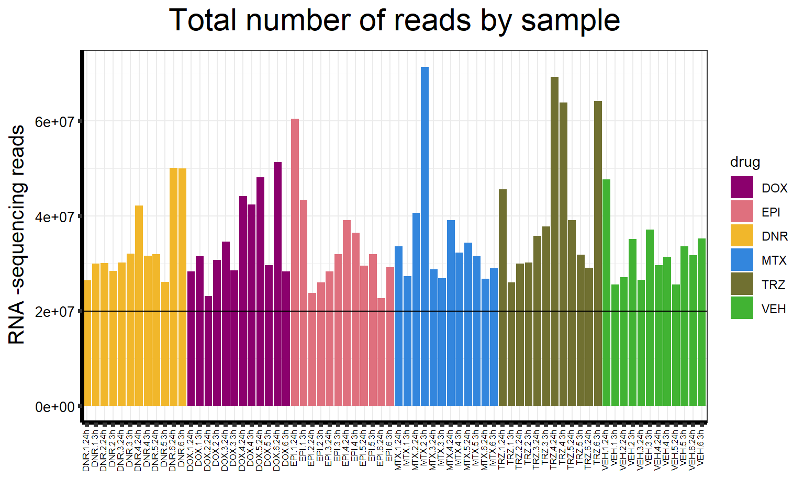
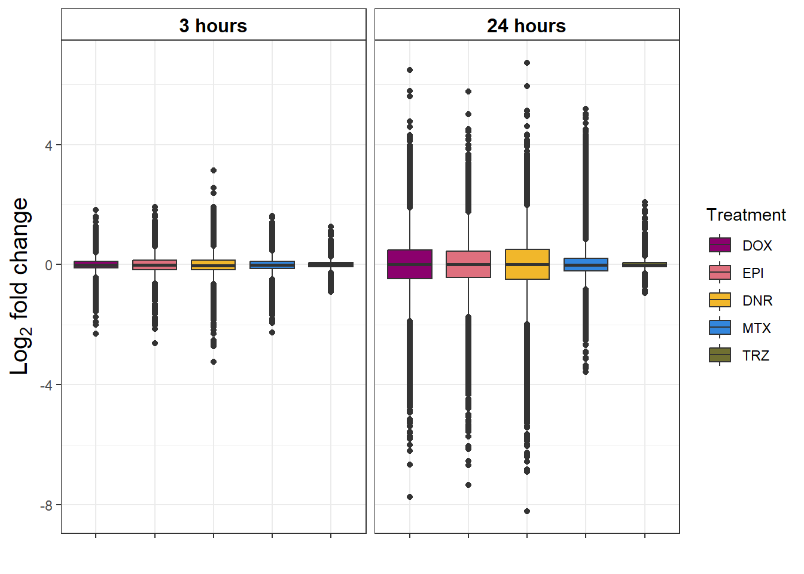
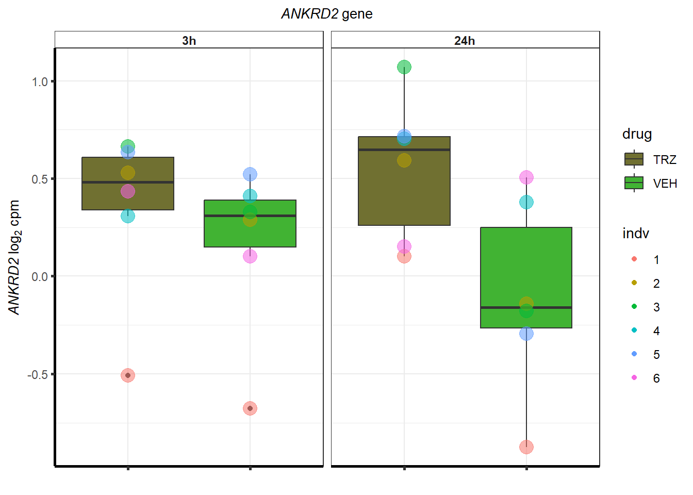
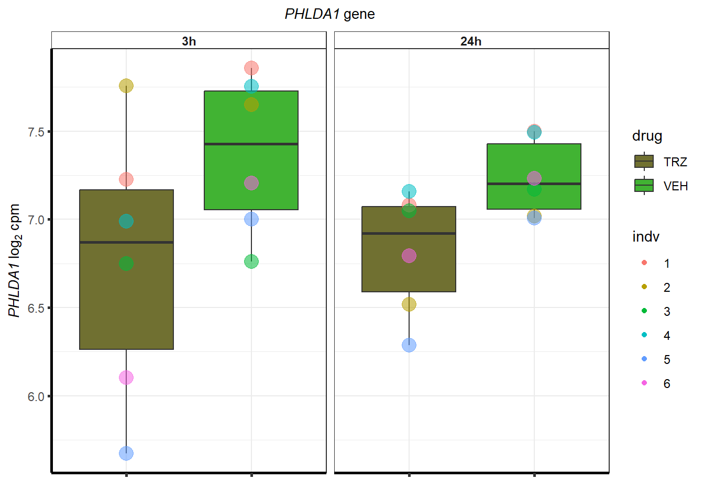
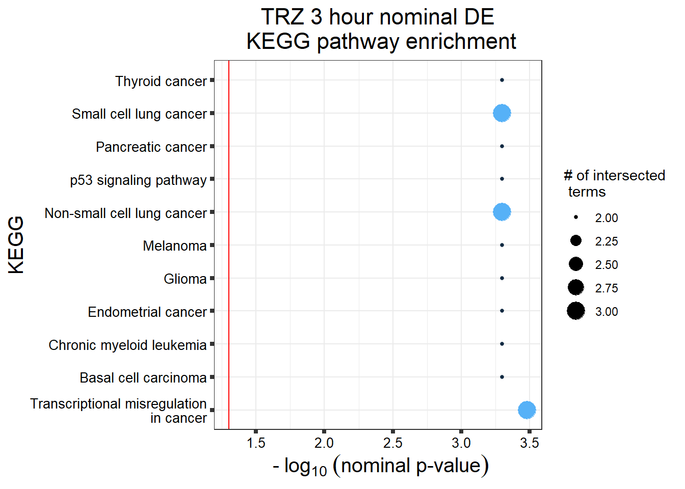
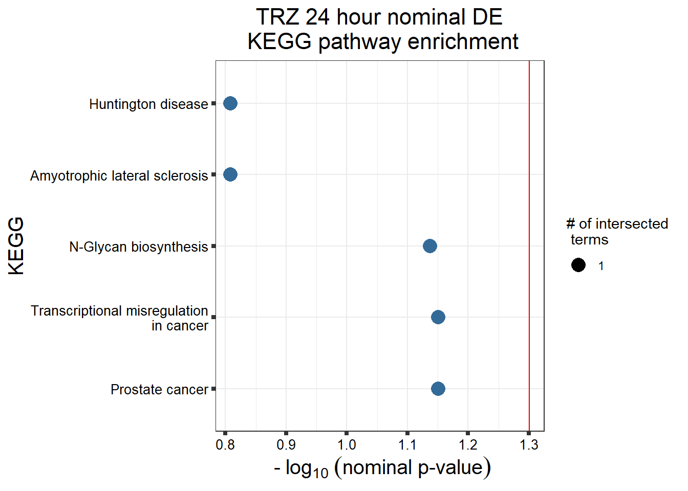
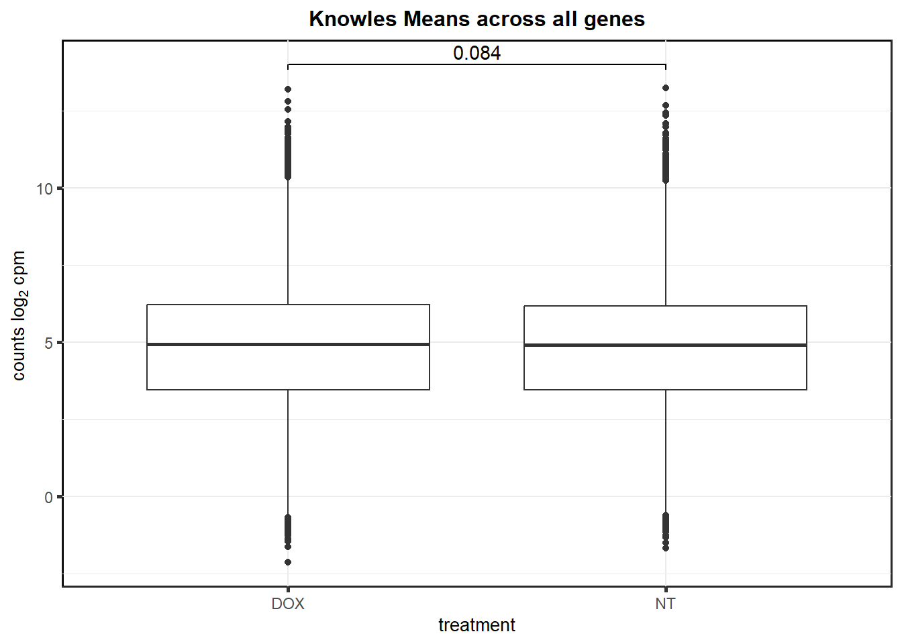
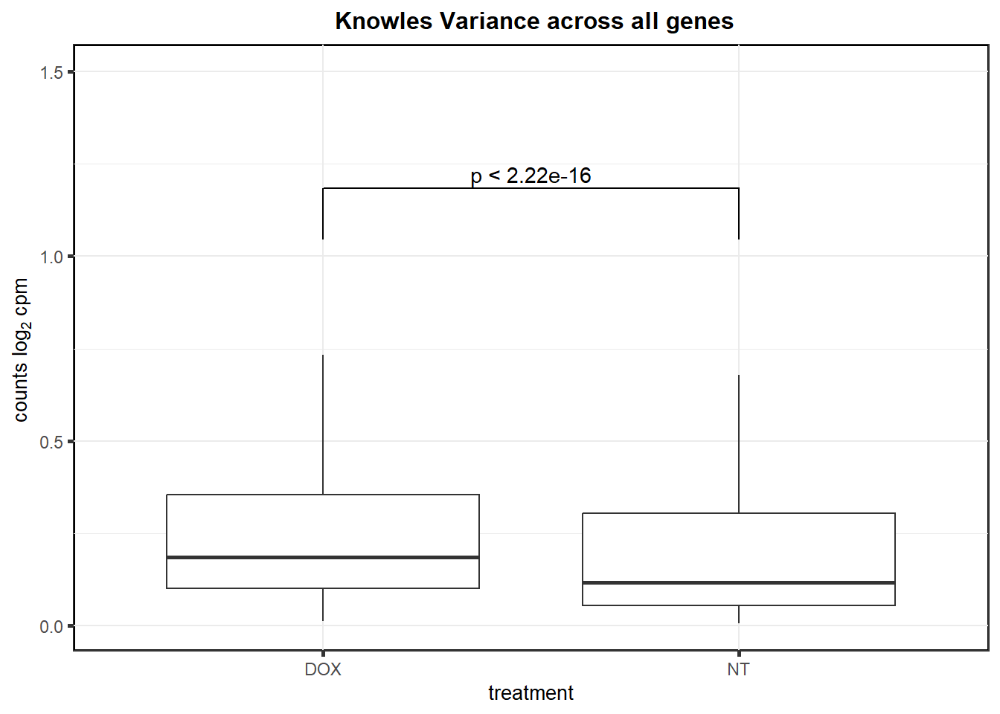

Supplementary figures
ERM
2024-02-12
Last updated: 2024-02-12
Checks: 7 0
Knit directory: Cardiotoxicity/
This reproducible R Markdown analysis was created with workflowr (version 1.7.1). The Checks tab describes the reproducibility checks that were applied when the results were created. The Past versions tab lists the development history.
Great! Since the R Markdown file has been committed to the Git repository, you know the exact version of the code that produced these results.
Great job! The global environment was empty. Objects defined in the global environment can affect the analysis in your R Markdown file in unknown ways. For reproduciblity it’s best to always run the code in an empty environment.
The command set.seed(20230109) was run prior to running
the code in the R Markdown file. Setting a seed ensures that any results
that rely on randomness, e.g. subsampling or permutations, are
reproducible.
Great job! Recording the operating system, R version, and package versions is critical for reproducibility.
Nice! There were no cached chunks for this analysis, so you can be confident that you successfully produced the results during this run.
Great job! Using relative paths to the files within your workflowr project makes it easier to run your code on other machines.
Great! You are using Git for version control. Tracking code development and connecting the code version to the results is critical for reproducibility.
The results in this page were generated with repository version 83b8420. See the Past versions tab to see a history of the changes made to the R Markdown and HTML files.
Note that you need to be careful to ensure that all relevant files for
the analysis have been committed to Git prior to generating the results
(you can use wflow_publish or
wflow_git_commit). workflowr only checks the R Markdown
file, but you know if there are other scripts or data files that it
depends on. Below is the status of the Git repository when the results
were generated:
Ignored files:
Ignored: .RData
Ignored: .Rhistory
Ignored: .Rproj.user/
Ignored: analysis/variance_values by gene.png
Ignored: data/41588_2018_171_MOESM3_ESMeQTL_ST2_for paper.csv
Ignored: data/Arr_GWAS.txt
Ignored: data/Arr_geneset.RDS
Ignored: data/BC_cell_lines.csv
Ignored: data/BurridgeDOXTOX.RDS
Ignored: data/CADGWASgene_table.csv
Ignored: data/CAD_geneset.RDS
Ignored: data/CALIMA_Data/
Ignored: data/CMD04_75DRCviability.csv
Ignored: data/CMD04_87DRCviability.csv
Ignored: data/CMD05_75DRCviability.csv
Ignored: data/CMD05_87DRCviability.csv
Ignored: data/Clamp_Summary.csv
Ignored: data/Cormotif_24_k1-5_raw.RDS
Ignored: data/Counts_RNA_ERMatthews.txt
Ignored: data/DAgostres24.RDS
Ignored: data/DAtable1.csv
Ignored: data/DDEMresp_list.csv
Ignored: data/DDE_reQTL.txt
Ignored: data/DDEresp_list.csv
Ignored: data/DEG-GO/
Ignored: data/DEG_cormotif.RDS
Ignored: data/DF_Plate_Peak.csv
Ignored: data/DRC48hoursdata.csv
Ignored: data/Da24counts.txt
Ignored: data/Dx24counts.txt
Ignored: data/Dx_reQTL_specific.txt
Ignored: data/EPIstorelist24.RDS
Ignored: data/Ep24counts.txt
Ignored: data/FC_necela.RDS
Ignored: data/FC_necela_names.RDS
Ignored: data/Full_LD_rep.csv
Ignored: data/GOIsig.csv
Ignored: data/GOplots.R
Ignored: data/GTEX_setsimple.csv
Ignored: data/GTEX_sig24.RDS
Ignored: data/GTEx_gene_list.csv
Ignored: data/HFGWASgene_table.csv
Ignored: data/HF_geneset.RDS
Ignored: data/Heart_Left_Ventricle.v8.egenes.txt
Ignored: data/Heatmap_mat.RDS
Ignored: data/Heatmap_sig.RDS
Ignored: data/Hf_GWAS.txt
Ignored: data/K_cluster
Ignored: data/K_cluster_kisthree.csv
Ignored: data/K_cluster_kistwo.csv
Ignored: data/Knowles_log2cpm_real.RDS
Ignored: data/Knowles_variation_data.RDS
Ignored: data/Knowles_variation_data_conc.RDS
Ignored: data/Knowlesvarlist.RDS
Ignored: data/LD50_05via.csv
Ignored: data/LDH48hoursdata.csv
Ignored: data/Mt24counts.txt
Ignored: data/NoRespDEG_final.csv
Ignored: data/RINsamplelist.txt
Ignored: data/RNA_seq_trial.RDS
Ignored: data/Schneider_GWAS.txt
Ignored: data/Seonane2019supp1.txt
Ignored: data/Sup_replicate_values.csv
Ignored: data/TMMnormed_x.RDS
Ignored: data/TOP2Bi-24hoursGO_analysis.csv
Ignored: data/TR24counts.txt
Ignored: data/TableS10.csv
Ignored: data/TableS11.csv
Ignored: data/TableS9.csv
Ignored: data/Top2_expression.RDS
Ignored: data/Top2biresp_cluster24h.csv
Ignored: data/Var_test_list.RDS
Ignored: data/Var_test_list24.RDS
Ignored: data/Var_test_list24alt.RDS
Ignored: data/Var_test_list3.RDS
Ignored: data/Vargenes.RDS
Ignored: data/Viabilitylistfull.csv
Ignored: data/allexpressedgenes.txt
Ignored: data/allfinal3hour.RDS
Ignored: data/allgenes.txt
Ignored: data/allmatrix.RDS
Ignored: data/allmymatrix.RDS
Ignored: data/annotation_data_frame.RDS
Ignored: data/averageviabilitytable.RDS
Ignored: data/averageviabilitytable.csv
Ignored: data/avgLD50.RDS
Ignored: data/avg_LD50.RDS
Ignored: data/avg_via_table.csv
Ignored: data/backGL.txt
Ignored: data/burr_genes.RDS
Ignored: data/calcium_data.RDS
Ignored: data/clamp_summary.RDS
Ignored: data/cormotif_3hk1-8.RDS
Ignored: data/cormotif_initalK5.RDS
Ignored: data/cormotif_initialK5.RDS
Ignored: data/cormotif_initialall.RDS
Ignored: data/cormotifprobs.csv
Ignored: data/counts24hours.RDS
Ignored: data/cpmcount.RDS
Ignored: data/cpmnorm_counts.csv
Ignored: data/crispr_genes.csv
Ignored: data/ctnnt_results.txt
Ignored: data/cvd_GWAS.txt
Ignored: data/dat_cpm.RDS
Ignored: data/data_outline.txt
Ignored: data/drug_noveh1.csv
Ignored: data/efit2.RDS
Ignored: data/efit2_final.RDS
Ignored: data/efit2results.RDS
Ignored: data/ensembl_backup.RDS
Ignored: data/ensgtotal.txt
Ignored: data/filcpm_counts.RDS
Ignored: data/filenameonly.txt
Ignored: data/filtered_cpm_counts.csv
Ignored: data/filtered_raw_counts.csv
Ignored: data/filtermatrix_x.RDS
Ignored: data/folder_05top/
Ignored: data/framefun24.RDS
Ignored: data/geneDoxonlyQTL.csv
Ignored: data/gene_corr_df.RDS
Ignored: data/gene_corr_frame.RDS
Ignored: data/gene_prob_tran3h.RDS
Ignored: data/gene_probabilityk5.RDS
Ignored: data/geneset_24.RDS
Ignored: data/gostresTop2bi_ER.RDS
Ignored: data/gostresTop2bi_LR
Ignored: data/gostresTop2bi_LR.RDS
Ignored: data/gostresTop2bi_TI.RDS
Ignored: data/gostrescoNR
Ignored: data/gtex/
Ignored: data/heartgenes.csv
Ignored: data/highly_var_genelist.RDS
Ignored: data/hsa_kegg_anno.RDS
Ignored: data/individualDRCfile.RDS
Ignored: data/individual_DRC48.RDS
Ignored: data/individual_LDH48.RDS
Ignored: data/indv_noveh1.csv
Ignored: data/kegglistDEG.RDS
Ignored: data/kegglistDEG24.RDS
Ignored: data/kegglistDEG3.RDS
Ignored: data/knowfig4.csv
Ignored: data/knowfig5.csv
Ignored: data/label_list.RDS
Ignored: data/ld50_table.csv
Ignored: data/mean_vardrug1.csv
Ignored: data/mean_varframe.csv
Ignored: data/mymatrix.RDS
Ignored: data/new_ld50avg.RDS
Ignored: data/nonresponse_cluster24h.csv
Ignored: data/norm_LDH.csv
Ignored: data/norm_counts.csv
Ignored: data/old_sets/
Ignored: data/organized_drugframe.csv
Ignored: data/pca_all_anno.csv
Ignored: data/plan2plot.png
Ignored: data/plot_intv_list.RDS
Ignored: data/plot_list_DRC.RDS
Ignored: data/qval24hr.RDS
Ignored: data/qval3hr.RDS
Ignored: data/qvalueEPItemp.RDS
Ignored: data/raw_counts.csv
Ignored: data/response_cluster24h.csv
Ignored: data/sampsettrz.RDS
Ignored: data/schneider_closest_output.RDS
Ignored: data/sigVDA24.txt
Ignored: data/sigVDA3.txt
Ignored: data/sigVDX24.txt
Ignored: data/sigVDX3.txt
Ignored: data/sigVEP24.txt
Ignored: data/sigVEP3.txt
Ignored: data/sigVMT24.txt
Ignored: data/sigVMT3.txt
Ignored: data/sigVTR24.txt
Ignored: data/sigVTR3.txt
Ignored: data/siglist.RDS
Ignored: data/siglist_final.RDS
Ignored: data/siglist_old.RDS
Ignored: data/slope_table.csv
Ignored: data/supp10_24hlist.RDS
Ignored: data/supp10_3hlist.RDS
Ignored: data/supp_normLDH48.RDS
Ignored: data/supp_pca_all_anno.RDS
Ignored: data/supp_viadata.csv
Ignored: data/table3a.omar
Ignored: data/test_run_sample_list.txt
Ignored: data/testlist.txt
Ignored: data/toplistall.RDS
Ignored: data/trtonly_24h_genes.RDS
Ignored: data/trtonly_3h_genes.RDS
Ignored: data/tvl24hour.txt
Ignored: data/tvl24hourw.txt
Ignored: data/venn_code.R
Ignored: data/viability.RDS
Untracked files:
Untracked: .RDataTmp
Untracked: .RDataTmp1
Untracked: .RDataTmp2
Untracked: .RDataTmp3
Untracked: 3hr all.pdf
Untracked: Code_files_list.csv
Untracked: Data_files_list.csv
Untracked: Doxorubicin_vehicle_3_24.csv
Untracked: Doxtoplist.csv
Untracked: EPIqvalue_analysis.Rmd
Untracked: Final.sup.pdf
Untracked: GWAS_list_of_interest.xlsx
Untracked: KEGGpathwaylist.R
Untracked: NA
Untracked: OmicNavigator_learn.R
Untracked: SNP_egenes_allfiles.RDS
Untracked: SNP_frame_pdf
Untracked: SNP_frame_pdf.pdf
Untracked: SigDoxtoplist.csv
Untracked: analysis/DRC_viability_check.Rmd
Untracked: analysis/New_code_dec-23.R
Untracked: analysis/cellcycle_kegg_genes.R
Untracked: analysis/ciFIT.R
Untracked: analysis/export_to_excel.R
Untracked: analysis/featureCountsPLAY.R
Untracked: cleanupfiles_script.R
Untracked: code/biomart_gene_names.R
Untracked: code/constantcode.R
Untracked: code/corMotifcustom.R
Untracked: code/cpm_boxplot.R
Untracked: code/extracting_ggplot_data.R
Untracked: code/movingfilesto_ppl.R
Untracked: code/pearson_extract_func.R
Untracked: code/pearson_tox_extract.R
Untracked: code/plot1C.fun.R
Untracked: code/spearman_extract_func.R
Untracked: code/venndiagramcolor_control.R
Untracked: cormotif_p.post.list_4.csv
Untracked: figS1024h.pdf
Untracked: final.pdf
Untracked: individual-legenddark2.png
Untracked: installed_old.rda
Untracked: listoftranscripts
Untracked: motif_ER.txt
Untracked: motif_LR.txt
Untracked: motif_NR.txt
Untracked: motif_TI.txt
Untracked: output/ABHD8_dif_values.RDS
Untracked: output/C3orf18_dif_values.RDS
Untracked: output/Cardiotox_dif_values.RDS
Untracked: output/DNR_DEGlist.csv
Untracked: output/DNRvenn.RDS
Untracked: output/DOX_DEGlist.csv
Untracked: output/DOX_de_goi.csv
Untracked: output/DOXvenn.RDS
Untracked: output/EEF1B2_dif_values.RDS
Untracked: output/EEIG1_dif_values.RDS
Untracked: output/EPI_DEGlist.csv
Untracked: output/EPIvenn.RDS
Untracked: output/ESGN_rds.RDS
Untracked: output/FC_necela.RDS
Untracked: output/FC_necela_names.RDS
Untracked: output/FRS2_dif_values.RDS
Untracked: output/Figures/
Untracked: output/GTEXv8_gene_median_tpm.RDS
Untracked: output/GTEXv8_gene_tpm_heart_left_ventricle.RDS
Untracked: output/HDDC2_dif_values.RDS
Untracked: output/HER2_gene.RDS
Untracked: output/KEGGcellcyclegenes.RDS
Untracked: output/Knowles_S13.csv
Untracked: output/Knowles_log2cpm.csv
Untracked: output/Knowles_supp13.csv
Untracked: output/LD50tox_table.RDS
Untracked: output/MTX_DEGlist.csv
Untracked: output/MTXvenn.RDS
Untracked: output/PEX16_dif_values.RDS
Untracked: output/RASIP1_dif_values.RDS
Untracked: output/RMI1_dif_values.RDS
Untracked: output/RSID_QTL_list_full.txt
Untracked: output/SETA_analysis_reyes.RDS
Untracked: output/SGWAS_top50_order.csv
Untracked: output/SLC27A1_dif_values.RDS
Untracked: output/SLC28A3_dif_values.RDS
Untracked: output/SNP_egenes_allfiles.RDS
Untracked: output/SNP_list_ID.RDS
Untracked: output/SNP_list_full.txt
Untracked: output/SNP_supp.RDS
Untracked: output/TGFBR3L_dif_values.RDS
Untracked: output/TNS2_dif_values.RDS
Untracked: output/TOP_50SNPreffile.csv
Untracked: output/TRZ_DEGlist.csv
Untracked: output/TableS8.csv
Untracked: output/Volcanoplot_10
Untracked: output/Volcanoplot_10.RDS
Untracked: output/ZNF740_dif_values.RDS
Untracked: output/allfinal_sup10.RDS
Untracked: output/counts_v8_heart_left_ventricle_gct.RDS
Untracked: output/crisprfoldchange.RDS
Untracked: output/endocytosisgenes.csv
Untracked: output/expre7k.csv
Untracked: output/expressed_egenes_by_RSID.csv
Untracked: output/gene_corr_fig9.RDS
Untracked: output/genes.RDS
Untracked: output/legend_b.RDS
Untracked: output/motif_ERrep.RDS
Untracked: output/motif_LRrep.RDS
Untracked: output/motif_NRrep.RDS
Untracked: output/motif_TI_rep.RDS
Untracked: output/near_genes_SNP1.RDS
Untracked: output/necela_list_test.RDS
Untracked: output/necela_val_genes.RDS
Untracked: output/output-old/
Untracked: output/rank24genes.csv
Untracked: output/rank3genes.csv
Untracked: output/sequencinginformationforsupp.csv
Untracked: output/sequencinginformationforsupp.prn
Untracked: output/sigVDA24.txt
Untracked: output/sigVDA3.txt
Untracked: output/sigVDX24.txt
Untracked: output/sigVDX3.txt
Untracked: output/sigVEP24.txt
Untracked: output/sigVEP3.txt
Untracked: output/sigVMT24.txt
Untracked: output/sigVMT3.txt
Untracked: output/sigVTR24.txt
Untracked: output/sigVTR3.txt
Untracked: output/supplementary_motif_list_GO.RDS
Untracked: output/test_biomart_run.RDS
Untracked: output/toptablebydrug.RDS
Untracked: output/trop_knowles_fun.csv
Untracked: output/tvl24hour.txt
Untracked: output/x_counts.RDS
Untracked: reneebasecode.R
Unstaged changes:
Modified: analysis/DRC_analysis.Rmd
Modified: analysis/Figure4.Rmd
Modified: analysis/Figure5.Rmd
Modified: analysis/GTEx_genes.Rmd
Deleted: analysis/Knowles2019.Rmd
Modified: output/daplot.RDS
Modified: output/dxplot.RDS
Modified: output/epplot.RDS
Modified: output/mtplot.RDS
Modified: output/plan2plot.png
Modified: output/trplot.RDS
Modified: output/veplot.RDS
Note that any generated files, e.g. HTML, png, CSS, etc., are not included in this status report because it is ok for generated content to have uncommitted changes.
These are the previous versions of the repository in which changes were
made to the R Markdown (analysis/Supplementary_figures.Rmd)
and HTML (docs/Supplementary_figures.html) files. If you’ve
configured a remote Git repository (see ?wflow_git_remote),
click on the hyperlinks in the table below to view the files as they
were in that past version.
| File | Version | Author | Date | Message |
|---|---|---|---|---|
| Rmd | 83b8420 | reneeisnowhere | 2024-02-12 | correction to markdown |
| html | a08048c | reneeisnowhere | 2024-02-06 | Build site. |
| Rmd | 2d6ed9b | reneeisnowhere | 2024-02-06 | TRZ GO added |
| html | 652df93 | reneeisnowhere | 2024-02-06 | Build site. |
| Rmd | b5afd08 | reneeisnowhere | 2024-02-06 | updates to figures |
| html | d570170 | reneeisnowhere | 2023-09-28 | Build site. |
| Rmd | c553b1c | reneeisnowhere | 2023-09-28 | rearrange and add CSS and links |
| html | a773744 | reneeisnowhere | 2023-08-10 | Build site. |
| Rmd | b30e0e4 | reneeisnowhere | 2023-08-10 | adding fig3 |
| html | 021ae6d | reneeisnowhere | 2023-08-08 | Build site. |
| Rmd | 04026ce | reneeisnowhere | 2023-08-08 | adding svglite |
| Rmd | b0c1fb8 | reneeisnowhere | 2023-08-01 | updated code but not published yet |
| html | fa4c610 | reneeisnowhere | 2023-07-28 | Build site. |
| Rmd | b2ef59a | reneeisnowhere | 2023-07-28 | new figures update |
| html | b31f596 | reneeisnowhere | 2023-07-28 | Build site. |
| Rmd | fdb94fb | reneeisnowhere | 2023-07-28 | new figures update |
| Rmd | 62286c3 | reneeisnowhere | 2023-07-28 | Updateing figure code |
| html | 680af3a | reneeisnowhere | 2023-06-26 | Build site. |
| Rmd | d7b9ff1 | reneeisnowhere | 2023-06-26 | Adding supplementary figures |
| html | 537bc2e | reneeisnowhere | 2023-06-26 | Build site. |
| Rmd | 6e50959 | reneeisnowhere | 2023-06-26 | Adding supplementary figures |
| html | dace8ba | reneeisnowhere | 2023-06-23 | Build site. |
| Rmd | 2b109c3 | reneeisnowhere | 2023-06-23 | adding some supp graphs |
| Rmd | c1d667f | reneeisnowhere | 2023-06-23 | updating the codes at Friday start. |
library(tidyverse)
library(ggpubr)
library(rstatix)
library(zoo)
library(ggsignif)
library(RColorBrewer)
library(grid)
library(scales)
library(ComplexHeatmap)
library(gridExtra)
library(cowplot)
library(drc)
library(kableExtra)Error: package or namespace load failed for 'kableExtra':
.onLoad failed in loadNamespace() for 'kableExtra', details:
call: !is.null(rmarkdown::metadata$output) && rmarkdown::metadata$output %in%
error: 'length = 3' in coercion to 'logical(1)'library(broom)
library(ggVennDiagram)Function to graph gene expression across treatments
cpm_boxplot_time <-function(cpmcounts,timex, GOI,brewer_palette, fill_colors, ylab) {
##GOI needs to be ENTREZID
df <- cpmcounts
df_plot <- df %>%
dplyr::filter(rownames(.)==GOI) %>%
pivot_longer(everything(),
names_to = "treatment",
values_to = "counts") %>%
separate(treatment, c("drug","indv","time")) %>%
dplyr::filter(time == paste(timex)) %>%
mutate(time=factor(time, levels =c("3h", "24h"), labels=c("3 hours", "24 hours"))) %>%
mutate(indv=factor(indv, levels = c(1,2,3,4,5,6))) %>%
mutate(drug =case_match(drug, "Da"~"DNR",
"Do"~"DOX",
"Ep"~"EPI",
"Mi"~"MTX",
"Tr"~"TRZ",
"Ve"~"VEH", .default = drug)) %>%
mutate(drug=factor(drug, levels = c('DOX','EPI','DNR','MTX','TRZ','VEH')))
plot <- ggplot2::ggplot(df_plot, aes(x=drug, y=counts))+
geom_boxplot(position="identity",aes(fill=drug))+
geom_point(aes(col=indv, size=1.5, alpha=0.5))+
guides(alpha= "none", size= "none")+
scale_color_brewer(palette = brewer_palette, guide = "none")+
scale_fill_manual(values=fill_colors)+
# try(facet_wrap("time", nrow=1, ncol=2))+
theme_bw()+
ylab(ylab)+
xlab("")+
theme(strip.background = element_rect(fill = "white",linetype=1, linewidth = 0.5),
plot.title = element_text(size=10,hjust = 0.5,face="bold"),
axis.title = element_text(size = 10, color = "black"),
axis.ticks = element_line(linewidth = 1.0),
axis.line = element_line(linewidth = 1.0),
axis.text.x = element_blank(),
strip.text.x = element_text(margin = margin(2,0,2,0, "pt"),face = "bold"))
print(plot)
}
drug_pal <- c("#707031","#41B333")
# use "Dark2" for individuals, and drug_pal for drug fill
cpm_TRZ <-
function(cpmcounts,
GOI,
ylab,
titlename) {
##GOI needs to be ENTREZID
df <- trz_veh_count %>%
column_to_rownames("ENTREZID")
df_plot <- df %>%
dplyr::filter(rownames(.) == GOI) %>%
pivot_longer(everything(),
names_to = "treatment",
values_to = "counts") %>%
separate(treatment, c("drug", "indv", "time")) %>%
mutate(time = factor(time, levels = c("3h", "24h"))) %>%
mutate(indv = factor(indv, levels = c(1, 2, 3, 4, 5, 6))) %>%
mutate(
drug = case_match(
drug,
"Da" ~ "DNR",
"Do" ~ "DOX",
"Ep" ~ "EPI",
"Mi" ~ "MTX",
"Tr" ~ "TRZ",
"Ve" ~ "VEH",
.default = drug
)
) %>%
mutate(drug = factor(drug, levels = c('DOX', 'EPI', 'DNR', 'MTX', 'TRZ', 'VEH')))
plot <-
ggplot2::ggplot(df_plot, aes(x = drug, y = counts)) +
geom_boxplot(position = "identity", aes(fill = drug)) +
geom_point(aes(
col = indv,
size = 1.5,
alpha = 0.5
)) +
guides(alpha = "none", size = "none") +
# scale_color_brewer(palette = "Dark2", guide = "none") +
scale_fill_manual(values = drug_pal) +
facet_wrap("time", nrow = 1, ncol = 2) +
theme_bw() +
ylab(ylab) +
xlab("") +
ggtitle(titlename)+
theme(
strip.background = element_rect(
fill = "white",
linetype = 1,
linewidth = 0.5
),
plot.title = element_text(
size = 10,
hjust = 0.5,
face = "bold"
),
axis.title = element_text(size = 10, color = "black"),
axis.ticks = element_line(linewidth = 1.0),
axis.line = element_line(linewidth = 1.0),
axis.text.x = element_blank(),
strip.text.x = element_text(margin = margin(2, 0, 2, 0, "pt"), face = "bold")
)
print(plot)
}S1 Fig: Cardiomyocytes can be generated at high purity across six individuals.
S1 FigA Flow cytometry results
Please see the paper for this figure. It was generated using FloJo.
S1 FigB
ctnnt <- read.csv("data/ctnnt_results.txt", row.names = 1)
ctnnt %>%
mutate(Individual=fct_inorder(Individual)) %>%
ggplot(., aes(Individual,Percent , fill=Individual))+
geom_boxplot()+
geom_point()+
geom_hline(yintercept =70,linetype="dashed", alpha=0.75)+###adds a line indicating high positivity +
coord_cartesian(ylim = c(0,105))+ ##set those limits
theme_bw()+ ##white background
labs(title="Cardiomyocyte Purity")+ #subtitle = "from n>3 differentiations")+
geom_boxplot(color="black",alpha =0.2, fill=NA, fatten=0, show.legend = FALSE)+
scale_fill_brewer(palette = "Dark2",name="" )+
xlab(NULL)+
ylab("% TNNT2+ ")+
guides(fill = NULL)+
theme(plot.title = element_text(hjust = 0.5, size =20, face= "bold"),
axis.title.x=element_blank(),
axis.text.x=element_blank(),###removes all axis names and tick names etc.####
axis.ticks.x=element_blank(),
# legend.text=element_text(size=15),
axis.title.y=element_text(size=15),
axis.ticks.y=element_line(size =2),
axis.text.y=element_text(size=10, face = "bold"),
panel.grid.major = element_line(colour = 'grey'),
panel.border=element_rect(fill = NA, size = 3),
plot.subtitle=element_text(size=18, hjust=0.5, face="italic", color="black")) 
# ctnnt %>%
# summary() %>%
# kable(., caption= "Stats summary of cTNNT+ FACs readings") %>%
# kable_paper("striped", full_width = FALSE) #%>%
# kable_styling(full_width = FALSE,font_size = 18) #%>%
# # scroll_box(width = "60%", height = "400px")S2 Fig: Dose-response curves are reproducible across replicate cardiomyocyte differentiations from the same individual.
drug_pal_fact <- c("#8B006D","#DF707E","#F1B72B", "#3386DD","#707031","#41B333")
library(data.table)
conf_int <- readRDS("data/plot_intv_list.RDS")
DRC_list <- readRDS("data/plot_list_DRC.RDS")
pull_drc2 <- data.frame("ind1", "ind2","ind3","ind4","ind5","ind6")
doubl_plot <- data.frame("ind3a", "ind3b", "ind5a", "ind5b")
color_order <- c('1','2','5','4','3','6')
intervals <- rbindlist(conf_int,idcol="trt")
drug_list <- c("DNR","DOX","EPI","MTX", "TRZ", "VEH")
for (each in 1:6){
newdata <- intervals %>%
separate("trt", into=c("sDrug",NA)) %>%
dplyr::filter(sDrug ==drug_list[each]) %>%
mutate(SampleID=indv) %>%
mutate(indv=substr(indv,4,4)) %>%
mutate(indv=factor(indv, levels=color_order)) %>%
dplyr::filter(SampleID %in% doubl_plot)
drug_plot <- DRC_list[[each]]
f <-
drug_plot %>%
filter(SampleID %in% doubl_plot) %>%
ggplot(., aes(x=Conc, y= Percent, group=SampleID,linetype=SampleID, color= indv,alpha =0.6 )) +
guides(color="none", alpha = "none")+
stat_smooth(method = "drm",
method.args = list(fct = L.4(c(NA,NA,1,NA))),
se = FALSE)+
geom_ribbon(data = newdata,
aes(x = Conc, y = Prediction,
ymin = Lower,
ymax = Upper,
fill=indv),
alpha = 0.1,
color = "transparent")+
# ylim(-.2,1.5)+
coord_cartesian(ylim = c(-0.1, 1.5)) +
scale_linetype_manual(values = c("dotted","solid","dotted","solid"),
name="replicate",
labels=c("Rep 1", "Rep 2","Rep 1", "Rep 2"))+
scale_color_brewer(palette = "Dark2")+
scale_fill_brewer(palette = "Dark2")+
scale_x_log10() + # Change the x-axis scale to log 10 scale
theme_classic() +
xlab(NULL)+
ylab(NULL)+
# scale_y_continuous(oob=scales::rescale_max, limits = -.4, 1.5)+
ggtitle(drug_list[each])+
theme(plot.title = element_text(hjust = 0.5, size =15, face ="bold"),
axis.title=element_text(size=10),
axis.ticks=element_line(linewidth = 2),
axis.text=element_text(size=10, face = "bold", color="black"),
panel.grid.major = element_line(colour = 'lightgrey'),
panel.border=element_rect(fill = NA, linewidth = 2),
plot.background = element_rect(fill = "white", colour = NA))
print(f)
} 


S3 Fig: Cancer drugs that decrease cardiomyocyte viability induce cellular stress.
viability <- readRDS("data/viability.RDS")
norm_LDH48 <- readRDS("data/supp_normLDH48.RDS")
viability %>%
left_join(., norm_LDH48,by = c("indv","Drug","Conc")) %>%
ggplot(., aes(x=per.live, y=ldh))+
geom_point(aes(col=indv))+
geom_smooth(method="lm")+
facet_wrap(~Drug)+
theme_bw()+
xlab("Average viability of cardiomyocytes/100") +
ylab("Average LDH") +
ggtitle("Cancer drugs that decrease cardiomyocyte viability induce cellular stress")+
scale_color_brewer(palette = "Dark2",name = "Individual", label = c("1","2","3","4","5","6"))+
ggpubr::stat_cor(method="pearson",
aes(label = paste(..r.label.., ..p.label.., sep = "*`,`~")),
color = "red")+
theme(plot.title = element_text(size = rel(1), hjust = 0.5,face = "bold"),
axis.title = element_text(size = 12, color = "black"),
axis.ticks = element_line(size = 1.5),
axis.text = element_text(size = 8, color = "black", angle = 0),
strip.text.x = element_text(size = 12, color = "black", face = "bold"),
strip.background = element_rect(fill = "transparent")) 
S4 Fig: Treatment with ACs at a dose of 0.5 \(\mu\)M for 48 hours induces effects on cardiomyocyte viability.
viabilitytable <- readRDS("data/averageviabilitytable.RDS")
viabilitytable %>%
ungroup() %>%
mutate(indv=substr(SampleID,4,4)) %>%
mutate(indv=factor(indv, levels= c('1','2','3','4','5','6'))) %>%
dplyr::filter(Conc <5) %>%
mutate(Conc= factor(as.numeric(Conc))) %>%
group_by(indv,sDrug,Conc) %>%
dplyr::summarize(Viability=mean(Mean)) %>%
ggplot(., aes(x=sDrug, y= Viability*100 )) +
geom_boxplot(position="dodge",
aes(fill=sDrug))+
geom_point(aes(color=indv))+
guides(alpha = "none")+
ylim(0,150.5)+
scale_color_brewer(palette = "Dark2",
guide="legend",
name ="individual",
labels(c(1,2,3,4,5,6)))+
scale_fill_manual(values=drug_pal_fact, name ="treatment")+
theme_classic() +
xlab("")+
ylab("% Viability") +
facet_wrap(~Conc)+
theme(axis.title=element_text(size=10),
axis.ticks=element_line(size =2),
axis.text.y=element_text(size=9, face = "bold"),
axis.text.x=element_blank(),
panel.grid.major = element_line(colour = 'darkgrey'),
panel.border=element_rect(fill = NA, size = 2),
plot.title = element_text(hjust = 0.5, size =15, face = "bold"))
S5 Fig: RNA-seq sample quality is equivalent across individuals, treatments, and time points.
S5 FigA RIN vs treatment time by drug
library(limma)
library(edgeR)
library(cowplot)
filcpm_matrix <- readRDS("data/filcpm_counts.RDS")
x <- readRDS("data/filtermatrix_x.RDS")
x$samples %>%
mutate(
drug = case_match(
drug,
"Daunorubicin" ~ "DNR",
"Doxorubicin" ~ "DOX",
"Epirubicin" ~ "EPI",
"Mitoxantrone" ~ "MTX",
"Trastuzumab" ~ "TRZ",
"Vehicle" ~ "VEH",
.default = drug
)
) %>%
mutate(drug = factor(drug, levels = c('DOX', 'EPI', 'DNR', 'MTX', 'TRZ', 'VEH'))) %>%
mutate(time = factor(time, labels = c("3 hours", "24 hours"))) %>%
ggplot(., aes(x = as.factor(time), y = RIN)) +
geom_boxplot(aes(fill = as.factor(time))) +
theme_bw() +
ylim(c(0, 10)) +
labs(x = "", fill = "Time in hours", y = "RNA Integrity Number") +
ggtitle("Boxplot of RIN by time and drug") +
facet_wrap( ~ drug) +
theme(
plot.title = element_text(size = rel(1.5), hjust = 0.5),
axis.title = element_text(size = 15, color = "black"),
axis.text.y = element_text(
size = 10,
color = "black",
angle = 0,
hjust = 0.8,
vjust = 0.5
),
axis.text.x = element_text(
size = 10,
color = "black",
angle = 0,
hjust = 1,
vjust = 0.2
),
strip.text.x = element_text(
size = 15,
color = "black",
face = "bold"
),
strip.background = element_rect(fill = "white")
)
| Version | Author | Date |
|---|---|---|
| d570170 | reneeisnowhere | 2023-09-28 |
S5 FigB Total number of reads by treatment
seq_info <- read.csv("output/sequencing_info.txt", row.names = 1)
seq_info %>%
filter(type == "Total_reads") %>%
mutate(
drug = case_match(
drug,
"Daunorubicin" ~ "DNR",
"Doxorubicin" ~ "DOX",
"Epirubicin" ~ "EPI",
"Mitoxantrone" ~ "MTX",
"Trastuzumab" ~ "TRZ",
"Vehicle" ~ "VEH",
.default = drug
)
) %>%
mutate(drug = factor(drug, levels = c('DOX', 'EPI', 'DNR', 'MTX', 'TRZ', 'VEH'))) %>%
ggplot(., aes (x = drug, y = count, fill = drug)) +
geom_boxplot() +
scale_fill_manual(values = drug_pal_fact) +
ggtitle(expression("Total number of reads by treatment")) +
xlab(" ") +
ylab(expression("RNA -sequencing reads")) +
theme_bw() +
theme(
plot.title = element_text(size = rel(1.5), hjust = 0.5),
axis.title = element_text(size = 12, color = "black"),
axis.ticks = element_line(linewidth = 1.5),
axis.line = element_line(linewidth = 1.5),
axis.text.y = element_text(
size = 10,
color = "black",
angle = 0,
hjust = 0.8,
vjust = 0.5
),
axis.text.x = element_text(size = 10, color = "white"),
#strip.text.x = element_text(size = 15, color = "black", face = "bold"),
strip.text.y = element_text(color = "white")
)
| Version | Author | Date |
|---|---|---|
| d570170 | reneeisnowhere | 2023-09-28 |
S5 FigC Total number of reads by sample
seq_info %>%
mutate(
drug = case_match(
drug,
"Daunorubicin" ~ "DNR",
"Doxorubicin" ~ "DOX",
"Epirubicin" ~ "EPI",
"Mitoxantrone" ~ "MTX",
"Trastuzumab" ~ "TRZ",
"Vehicle" ~ "VEH",
.default = drug
)
) %>%
mutate(drug = factor(drug, levels = c('DOX', 'EPI', 'DNR', 'MTX', 'TRZ', 'VEH'))) %>%
# separate(samplenames, into=c(NA,NA,NA,"samplenames")) %>%
# mutate(shortnames = paste("Sample",str_trim(samplenames))) %>%
filter(type == "Total_reads") %>%
mutate(sampleID = colnames(filcpm_matrix)) %>%
ggplot(., aes (
x = sampleID,
y = count,
fill = drug,
group_by = indv
)) +
geom_col() +
geom_hline(aes(yintercept = 20000000)) +
scale_fill_manual(values = drug_pal_fact) +
ggtitle(expression("Total number of reads by sample")) +
xlab("") +
ylab(expression("RNA -sequencing reads")) +
theme_bw() +
theme(
plot.title = element_text(size = rel(2), hjust = 0.5),
axis.title = element_text(size = 15, color = "black"),
axis.ticks = element_line(linewidth = 1.5),
axis.line = element_line(linewidth = 1.5),
axis.text.y = element_text(
size = 10,
color = "black",
angle = 0,
hjust = 0.8,
vjust = 0.5
),
axis.text.x = element_text(
size = 6,
color = "black",
angle = 90,
hjust = 1,
vjust = 0.2
),
#strip.text.x = element_text(size = 15, color = "black", face = "bold"),
strip.text.y = element_text(color = "white")
)
| Version | Author | Date |
|---|---|---|
| d570170 | reneeisnowhere | 2023-09-28 |
To see more RNA-seq related analysis click here
S6 Fig: RNA-seq samples cluster by treatment type, timepoint, and individual. Pearson correlation of log2 cpm values across all pairs of samples.
filcpm_matrix <- readRDS("data/filcpm_counts.RDS")
mcor <- cor(filcpm_matrix)
filmat_groupmat_col <- data.frame(timeset = colnames(filcpm_matrix))
counts_corr_mat <- filmat_groupmat_col %>%
separate(timeset, into = c("drug", "indv", "time")) %>%
mutate(class = if_else(drug == "DNR", "AC", if_else(
drug == "DOX", "AC", if_else(drug == "EPI", "AC", "nAC")
))) %>%
mutate(TOP2i = if_else(drug == "DNR", "yes", if_else(
drug == "DOX", "yes", if_else(drug == "EPI", "yes", if_else(drug == "MTX", "yes", "no"))
)))
mat_colors <- list(
drug= c("#F1B72B","#8B006D","#DF707E","#3386DD","#707031","#41B333"),
indv=c("#1B9E77", "#D95F02" ,"#7570B3", "#E7298A" ,"#66A61E", "#E6AB02"),
time=c("pink", "chocolate4"),
class=c("yellow1","darkorange1"),
TOP2i =c("darkgreen","lightgreen"))
names(mat_colors$drug) <- unique(counts_corr_mat$drug)
names(mat_colors$indv) <- unique(counts_corr_mat$indv)
names(mat_colors$time) <- unique(counts_corr_mat$time)
names(mat_colors$class) <- unique(counts_corr_mat$class)
names(mat_colors$TOP2i) <- unique(counts_corr_mat$TOP2i)
ComplexHeatmap::pheatmap(mcor,
# column_title=(paste0("RNA-seq log"[2]~"cpm correlation")),
annotation_col = counts_corr_mat,
annotation_colors = mat_colors,
heatmap_legend_param = mat_colors,
fontsize=10,
fontsize_row = 8,
angle_col="90",
treeheight_row=25,
fontsize_col = 8,
treeheight_col = 20)
To see more RNA-seq related analysis click here
S7 Fig: PC1 associates with drug treatment and treatment time, while PC2 associates with individual.
pca_all_anno <- readRDS("data/supp_pca_all_anno.RDS")
pca_all_anno <- pca_all_anno %>%
mutate(
drug = case_match(
drug,
"Daunorubicin" ~ "DNR",
"Doxorubicin" ~ "DOX",
"Epirubicin" ~ "EPI",
"Mitoxantrone" ~ "MTX",
"Trastuzumab" ~ "TRX",
"Vehicle" ~ "VEH",
.default = drug
)
)
facs <- c("indv", "drug", "time")
names(facs) <- c("Individual", "Treatment", "Time")
get_regr_pval <- function(mod) {
# Returns the p-value for the Fstatistic of a linear model
# mod: class lm
stopifnot(class(mod) == "lm")
fstat <- summary(mod)$fstatistic
pval <- 1 - pf(fstat[1], fstat[2], fstat[3])
return(pval)
}
plot_versus_pc <- function(df, pc_num, fac) {
# df: data.frame
# pc_num: numeric, specific PC for plotting
# fac: column name of df for plotting against PC
pc_char <- paste0("PC", pc_num)
# Calculate F-statistic p-value for linear model
pval <- get_regr_pval(lm(df[, pc_char] ~ df[, fac]))
if (is.numeric(df[, f])) {
ggplot(df, aes_string(x = f, y = pc_char)) + geom_point() +
geom_smooth(method = "lm") + labs(title = sprintf("p-val: %.2f", pval))
} else {
ggplot(df, aes_string(x = f, y = pc_char)) + geom_boxplot() +
labs(title = sprintf("p-val: %.2f", pval))
}
}
for (f in facs) {
# Plot f versus PC1 and PC2
f_v_pc1 <-
arrangeGrob(plot_versus_pc(pca_all_anno, 1, f) + theme_bw())
f_v_pc2 <-
arrangeGrob(plot_versus_pc(pca_all_anno, 2, f) + theme_bw())
grid.arrange(f_v_pc1, f_v_pc2, ncol = 2, top = names(facs)[which(facs == f)])
}


To see more RNA-seq related analysis click here
S8 Fig: Thousands of gene expression changes are induced in response to TOP2i treatment over 24 hours.
Volcanoplots <- readRDS("output/Volcanoplot_10.RDS")
Volcanoplots
To see more RNA-seq related analysis click here
S9 Fig: ACs affect expression of nearly half of all expressed genes after 24 hours of treatment.
S9 FigA Proportion of genes DE in response to drug treatment
toplistall <- readRDS("data/toplistall.RDS")
drug_pal_fact <- c("#8B006D","#DF707E","#F1B72B", "#3386DD","#707031","#41B333")
toplistall %>%
mutate(id=factor(id, levels = c('DOX', 'EPI', 'DNR', 'MTX', 'TRZ','VEH'))) %>%
mutate(time= factor(time,
levels=c("3_hours","24_hours"),
labels=c("3 hours","24 hours"))) %>%
group_by(time, id) %>%
mutate(sigcount = if_else(adj.P.Val < 0.05,'sig','notsig'))%>%
count(sigcount) %>%
pivot_wider(id_cols = c(time,id), names_from=sigcount, values_from=n) %>%
mutate(prop = sig/(sig+notsig)*100) %>%
mutate(prop=if_else(is.na(prop),0,prop)) %>%
ggplot(., aes(x=id, y= prop))+
geom_col(aes(fill=id))+
geom_text(aes(label = sprintf("%.2f",prop)),
position=position_dodge(0.9),vjust=-.2 )+
scale_fill_manual(values =drug_pal_fact)+
guides(fill=guide_legend(title = "Treatment"))+
facet_wrap(~time)+#labeller = (time = facettimelabel) )+
theme_bw()+
xlab("")+
ylab("Percentage of expressed genes")+
theme_bw()+
ggtitle("Percent DEGs (adj. P value <0.05)")+
scale_y_continuous(expand=expansion(c(0.02,.2)))+
theme(plot.title = element_text(size = rel(1.5), hjust = 0.5),
axis.title = element_text(size = 15, color = "black"),
# axis.ticks = element_line(linewidth = 1.5),
# axis.line = element_line(linewidth = 1.5),
strip.background = element_rect(fill = "transparent"),
axis.text.x = element_text(size = 8, color = "white", angle = 0),
axis.text.y = element_text(size = 8, color = "black", angle = 0),
strip.text.x = element_text(size = 12, color = "black", face = "bold"))
S9 FigB Magnitude of response to drug treatment
toplistall %>%
group_by(time, id) %>%
mutate(id=factor(id, levels = c('DOX', 'EPI', 'DNR', 'MTX', 'TRZ','VEH'))) %>%
mutate(time= factor(time,
levels=c("3_hours","24_hours"),
labels=c("3 hours","24 hours"))) %>%
ggplot(., aes(x=id, y=logFC))+
geom_boxplot(aes(fill=id))+
ggpubr::fill_palette(palette =drug_pal_fact)+
guides(fill=guide_legend(title = "Treatment"))+
# facet_wrap(sigcount~time)+
theme_bw()+
xlab("")+
ylab(expression("Log"[2]*" fold change"))+
theme_bw()+
facet_wrap(~time)+
theme(plot.title = element_text(size = rel(1.5), hjust = 0.5),
axis.title = element_text(size = 15, color = "black"),
# axis.ticks = element_line(linewidth = 1.5),
# axis.line = element_line(linewidth = 1.5),
strip.background = element_rect(fill = "transparent"),
axis.text.x = element_blank(),
strip.text.x = element_text(size = 12, color = "black", face = "bold"))
| Version | Author | Date |
|---|---|---|
| d570170 | reneeisnowhere | 2023-09-28 |
S10 Fig: A small number of genes respond to a single drug only.
3 hours
supp10_3hlist <- readRDS("data/supp10_3hlist.RDS")
list2env(supp10_3hlist, envir = .GlobalEnv)<environment: R_GlobalEnv>mito3pg <- plot_grid(densityMTX3sp, MTX3Bplot, MTX3genesp_example,
nrow = 1,
rel_heights = c(.8,2,1),
rel_widths=c(1.2,1,1.5),
scale=c(1,0.8,0.8))
Daun3pg <- plot_grid(densityDNR3sp, DNR3Bplot, DNR3genesp_example, nrow = 1, rel_heights = c(.8,2,1), rel_widths=c(1.2,1,1.5),scale=c(1,0.8,0.8))
Doxo3pg <- plot_grid(NA, NA, NA, nrow = 1, rel_heights = c(.8,2,1), rel_widths=c(1.2,1,1.5),scale=c(1,0.8,0.8))
Epi3pg <- plot_grid(densityEPI3sp, NA, NA, nrow = 1, rel_heights = c(.8,2,1), rel_widths=c(1.2,1,1.5),scale=c(1,0.8,0.8))
allfinal3hour <- plot_grid(Doxo3pg,Epi3pg,Daun3pg,mito3pg,nrow=4, rel_heights = c(1,1,1,1))
# allfinal3hour <- readRDS("data/allfinal3hour.RDS")
allfinal3hour
| Version | Author | Date |
|---|---|---|
| d570170 | reneeisnowhere | 2023-09-28 |
24 hours
supp10_24hlist <- readRDS("data/supp10_24hlist.RDS")
list2env(supp10_24hlist, envir = .GlobalEnv)<environment: R_GlobalEnv>mitopg <- plot_grid(densityMTXsp, MtxBplot, Mtxgenesp_example,
nrow = 1,
rel_heights = c(.8,2,1),
rel_widths=c(1.2,1,1.5),
scale=c(1,0.8,0.8))
Daunpg <- plot_grid(densityDNRsp, DnrBplot, Dnrgenesp_example, nrow = 1, rel_heights = c(.8,2,1), rel_widths=c(1.2,1,1.5),scale=c(1,0.8,0.8))
Doxopg <- plot_grid(densityDOXsp, DoxBplot, Doxgenesp_example, nrow = 1, rel_heights = c(.8,2,1), rel_widths=c(1.2,1,1.5),scale=c(1,0.8,0.8))
Epipg <- plot_grid(densityEPIsp, EpiBplot, Epigenesp_example, nrow = 1, rel_heights = c(.8,2,1), rel_widths=c(1.2,1,1.5),scale=c(1,0.8,0.8))
allfinal <- plot_grid(Doxopg,Epipg,Daunpg,mitopg,nrow=4, labels = "AUTO")
# allfinal <- readRDS("output/allfinal_sup10.RDS")
plot(allfinal)
| Version | Author | Date |
|---|---|---|
| d570170 | reneeisnowhere | 2023-09-28 |
S11 Fig: Stringently-identified drug-specific response genes are enriched in biological processes.
3 hours
gostres3Dnrdeg_sp <- readRDS("data/DEG-GO/gostres3Dnrdeg_sp.RDS")
Dnr3_sp_DEGtable <- gostres3Dnrdeg_sp$result %>%
dplyr::select(c(source, term_id,term_name,intersection_size,
term_size, p_value))
Dnr3_sp_DEGtable %>%
dplyr::filter(source=="GO:BP") %>%
dplyr::select(p_value,term_name,intersection_size) %>%
slice_min(., n=10 ,order_by=p_value) %>%
mutate(log_val = -log10(p_value)) %>%
# slice_max(., n=10,order_by = p_value) %>%
ggplot(., aes(x = log_val, y =reorder(term_name,p_value), col= intersection_size)) +
geom_point(aes(size = intersection_size)) +
scale_y_discrete(labels =scales::label_wrap(30))+
guides(col="none", size=guide_legend(title = "# of intersected \n terms"))+
ggtitle('DNR 3 hour specific(stringent)\n gene set GO:BP terms') +
xlab(expression(" -"~log[10]~("adj. p-value")))+
ylab("GO: BP term")+
theme_bw()+
theme(plot.title = element_text(size = rel(1.5), hjust = 0.5),
axis.title = element_text(size = 15, color = "black"),
axis.ticks = element_line(linewidth = 1.5),
axis.line = element_line(linewidth = 1.5),
axis.text = element_text(size = 10, color = "black", angle = 0),
strip.text.x = element_text(size = 12, color = "black", face = "bold"))
| Version | Author | Date |
|---|---|---|
| d570170 | reneeisnowhere | 2023-09-28 |
gostres3Mtxdeg_sp <- readRDS("data/DEG-GO/gostres3Mtxdeg_sp.RDS")
Mtx3_sp_DEGtable <- gostres3Mtxdeg_sp$result %>%
dplyr::select(c(source, term_id,term_name,intersection_size,
term_size, p_value))
Mtx3_sp_DEGtable %>%
dplyr::filter(source=="GO:BP") %>%
dplyr::select(p_value,term_name,intersection_size) %>%
slice_min(., n=5,order_by=p_value) %>%
mutate(log_val = -log10(p_value)) %>%
# slice_max(., n=10,order_by = p_value) %>%
ggplot(., aes(x = log_val, y =reorder(term_name,p_value), col= intersection_size)) +
geom_point(aes(size = intersection_size)) +
scale_y_discrete(labels = scales::label_wrap(30))+
geom_vline(xintercept = (-log10(0.05)))+
guides(col="none", size=guide_legend(title = "# of intersected \n terms"))+
ggtitle('MTX 3 hour specific(stringent)\n gene set GO:BP terms') +
xlab(expression(" -"~log[10]~("adj. p-value")))+
ylab("GO: BP term")+
theme_bw()+
theme(plot.title = element_text(size = rel(1.5), hjust = 0.5),
axis.title = element_text(size = 15, color = "black"),
axis.ticks = element_line(linewidth = 1.5),
axis.line = element_line(linewidth = 1.5),
axis.text = element_text(size = 10, color = "black", angle = 0),
strip.text.x = element_text(size = 12, color = "black", face = "bold"))
| Version | Author | Date |
|---|---|---|
| d570170 | reneeisnowhere | 2023-09-28 |
24 hours
DX_sp_DEGgostres <- readRDS("data/DEG-GO/gostresDOXdeg_sp.RDS")
MT_sp_DEGgostres <- readRDS("data/DEG-GO/gostresMTXdeg_sp.RDS")
DX_sp_DEGtable <- DX_sp_DEGgostres$result %>%
dplyr::select(c(source, term_id,term_name,intersection_size,
term_size, p_value))
MT_sp_DEGtable <- MT_sp_DEGgostres$result %>%
dplyr::select(c(source, term_id,term_name,intersection_size,
term_size, p_value))
DX_sp_DEGtable %>%
dplyr::filter(source=="GO:BP") %>%
dplyr::select(p_value,term_name,intersection_size) %>%
slice_min(., n=10 ,order_by=p_value) %>%
mutate(log_val = -log10(p_value)) %>%
# slice_max(., n=10,order_by = p_value) %>%
ggplot(., aes(x = log_val, y =reorder(term_name,p_value), col= intersection_size)) +
geom_point(aes(size = intersection_size)) +
scale_y_discrete(labels = scales::wrap_format(30))+
guides(col="none", size=guide_legend(title = "# of intersected \n terms"))+
ggtitle('DOX specific 24 hour gene set GO:BP terms') +
xlab(expression(" -"~log[10]~("adj. p-value")))+
ylab("GO: BP term")+
theme_bw()+
theme(plot.title = element_text(size = rel(1.5), hjust = 0.5),
axis.title = element_text(size = 15, color = "black"),
axis.ticks = element_line(linewidth = 1.5),
axis.line = element_line(linewidth = 1.5),
axis.text = element_text(size = 10, color = "black", angle = 0),
strip.text.x = element_text(size = 12, color = "black", face = "bold"))
| Version | Author | Date |
|---|---|---|
| d570170 | reneeisnowhere | 2023-09-28 |
MT_sp_DEGtable %>%
dplyr::filter(source=="GO:BP") %>%
dplyr::select(p_value,term_name,intersection_size) %>%
slice_min(., n=10 ,order_by=p_value) %>%
mutate(log_val = -log10(p_value)) %>%
# slice_max(., n=10,order_by = p_value) %>%
ggplot(., aes(x = log_val, y =reorder(term_name,p_value), col= intersection_size)) +
geom_point(aes(size = intersection_size)) +
scale_y_discrete(labels = scales::wrap_format(30))+
guides(col="none", size=guide_legend(title = "# of intersected \n terms"))+
ggtitle('MTX specific 24 hour gene set GO:BP terms') +
xlab(expression(" -"~log[10]~("adj. p-value")))+
ylab("GO: BP term")+
theme_bw()+
theme(plot.title = element_text(size = rel(1.5), hjust = 0.5),
axis.title = element_text(size = 15, color = "black"),
axis.ticks = element_line(linewidth = 1.5),
axis.line = element_line(linewidth = 1.5),
axis.text = element_text(size = 10, color = "black", angle = 0),
strip.text.x = element_text(size = 12, color = "black", face = "bold"))
| Version | Author | Date |
|---|---|---|
| d570170 | reneeisnowhere | 2023-09-28 |
S12 Fig: Nominally significant TRZ response genes show enrichment in cancer-related pathways.
FC_mine <- readRDS("data/toplistall.RDS")
TRZ_list <- FC_mine %>%
dplyr::filter(id=="TRZ",P.Value < 0.05)
TRZ_list %>%
group_by(time) %>%
count() %>%
mutate(time = factor(time, levels = c("3_hours", "24_hours"), labels = c("3 hours", "24 hours")))%>%
ggplot(., aes(x=time, y=n))+
geom_col()+
theme_bw() +
ggtitle("Number of nominal pvalue TRZ genes by time"
)+
ylab(expression("count")) +
theme(
strip.background = element_rect(
fill = "white",
linetype = 1,
linewidth = 0.5
),
plot.title = element_text(size = 12, hjust = 0.5, face = "bold"),
axis.title = element_text(size = 10, color = "black"),
axis.ticks = element_line(linewidth = 1.0),
panel.background = element_rect(colour = "black", size = 1),
# axis.text.x = element_blank(),
strip.text.x = element_text(margin = margin(2, 0, 2, 0, "mm"), face = "bold")
)
| Version | Author | Date |
|---|---|---|
| 652df93 | reneeisnowhere | 2024-02-06 |
all_cpmcount <- readRDS("data/cpmcount.RDS") %>% rownames_to_column(var = "ENTREZID")
##pulled all my logcpm, now choosing only TRZ and VEH for plotting
trz_veh_count <- all_cpmcount %>%
dplyr::select(ENTREZID, starts_with("Tr"), starts_with("Ve"))
sampset <- readRDS("data/sampsettrz.RDS")
sub_samp <- sampset %>%
dplyr::filter(SYMBOL=="PHLDA1"|SYMBOL== "ANKRD2")
# <- TRZ_list %>%
# distinct(ENTREZID,.keep_all = TRUE) %>%
# sample_n(.,6)
for (g in seq(from=1, to=length(sub_samp$ENTREZID))){
a <- sub_samp$SYMBOL[g]
cpm_TRZ(trz_veh_count,GOI=sub_samp[g,3],
ylab=bquote(~italic(.(a))~log[2]~"cpm "),
titlename=bquote(~italic(.(a))~"gene "))
}
| Version | Author | Date |
|---|---|---|
| 652df93 | reneeisnowhere | 2024-02-06 |

| Version | Author | Date |
|---|---|---|
| 652df93 | reneeisnowhere | 2024-02-06 |
list3hr <- readRDS("data/DEG-GO/list3hr.RDS")
list24hr <- readRDS("data/DEG-GO/list24hr.RDS")
KEGGtrz3 <- c("KEGG:05202", "KEGG:04115", "KEGG:05223", "KEGG:05212","KEGG:05222")
KEGGtrz24 <- c("KEGG:05202", "KEGG:05215", "KEGG:00510")
# testframe <- lapply(list3hr, `[`,'result')
hr3_results <- list3hr |>
map(~ .x$result |> dplyr::select(p_value,term_id,term_name,intersection_size))
hr24_results <- list24hr |>
map(~ .x$result |> dplyr::select(p_value,term_id,term_name,intersection_size))
table_3hr <- list_rbind(hr3_results,names_to = "set")%>%
mutate(log_val = -log10(p_value)) %>%
dplyr::filter(term_id %in% KEGGtrz3) %>%
mutate(treatment = case_when(set =="DAgostres3"~"DNR",set=="DXgostres" ~ "DOX",set=="EPgostres"~"EPI",set=="MTgostres"~"MTX",set=="TRZresgenes3h"~"TRZ",set=="DDEgostres23only"~"AC",set=="DDEMgostres3"~"TOP2i"))
table_24hr <- list_rbind(hr24_results,names_to = "set") %>%
mutate(log_val = -log10(p_value))%>%
dplyr::filter(term_id %in% KEGGtrz24) %>%
mutate(treatment = case_when(set =="DAgostres24"~"DNR",set=="DXgostres24" ~ "DOX",set=="EPgostres24"~"EPI",set=="MTgostres24"~"MTX",set=="TRZresgenes243h"~"TRZ",set=="DDEgostres24only"~"AC",set=="DDEMgostres24"~"TOP2i"))
hr3_results[["TRZresgenes3h"]] %>%
mutate(log_val = -log10(p_value)) %>%
dplyr::filter(str_detect(term_id,"^KEGG:")) %>%
slice_min(., n=5,order_by=p_value) %>%
ggplot(., aes(x = log_val, y =reorder(term_name,p_value),col=intersection_size)) +
geom_point(aes(size = intersection_size)) +
scale_y_discrete(labels = scales::label_wrap(30))+
geom_vline(xintercept = (-log10(0.05)), col="red")+
guides(col="none", size=guide_legend(title = "# of intersected \n terms"))+
ggtitle('TRZ 3 hour nominal DE\n KEGG pathway enrichment') +
xlab(expression(" -"~log[10]~("nominal p-value")))+
ylab("KEGG")+
theme_bw()+
theme(plot.title = element_text(size = rel(1.5), hjust = 0.5),
axis.title = element_text(size = 15, color = "black"),
axis.ticks = element_line(linewidth = 1.5),
# axis.line = element_line(linewidth = 1.5),
axis.text = element_text(size = 10, color = "black", angle = 0),
strip.text.x = element_text(size = 12, color = "black", face = "bold"))
| Version | Author | Date |
|---|---|---|
| a08048c | reneeisnowhere | 2024-02-06 |
hr24_results[["TRZresgenes243h"]] %>%
mutate(log_val = -log10(p_value)) %>%
dplyr::filter(str_detect(term_id,"^KEGG:")) %>%
slice_min(., n=5,order_by=p_value) %>%
ggplot(., aes(x = log_val, y =reorder(term_name,p_value), col=intersection_size)) +
geom_point(aes(size = intersection_size)) +
scale_y_discrete(labels = scales::label_wrap(30))+
geom_vline(xintercept = (-log10(0.05)), col="red")+
guides(col="none", size=guide_legend(title = "# of intersected \n terms"))+
ggtitle('TRZ 24 hour nominal DE\n KEGG pathway enrichment') +
xlab(expression(" -"~log[10]~("nominal p-value")))+
ylab("KEGG")+
theme_bw()+
theme(plot.title = element_text(size = rel(1.5), hjust = 0.5),
axis.title = element_text(size = 15, color = "black"),
axis.ticks = element_line(linewidth = 1.5),
# axis.line = element_line(linewidth = 1.5),
axis.text = element_text(size = 10, color = "black", angle = 0),
strip.text.x = element_text(size = 12, color = "black", face = "bold"))
| Version | Author | Date |
|---|---|---|
| a08048c | reneeisnowhere | 2024-02-06 |
More on TRZ expression click
here
OR GO analysis
here
S13 Fig: Four gene expression signatures capture the response to TOP2i over time.
S13 FigA
cormotif_initial <- readRDS("data/cormotif_initialall.RDS")
Cormotif::plotIC(cormotif_initial)
| Version | Author | Date |
|---|---|---|
| d570170 | reneeisnowhere | 2023-09-28 |
S13 FigB
motif_NRrep <- readRDS("output/motif_NRrep.RDS")
motif_ERrep <- readRDS("output/motif_ERrep.RDS")
motif_TIrep <- readRDS("output/motif_TI_rep.RDS")
motif_LRrep <- readRDS("output/motif_LRrep.RDS")
motif_NRrep <- motif_NRrep +
scale_y_continuous(labels = scales::number_format(accuracy = 0.1))+
theme(legend.position = "NULL", axis.title.y =element_text(size =12))
motif_ERrep <- motif_ERrep+
scale_y_continuous(labels = scales::number_format(accuracy = 0.1))+
theme(legend.position = "NULL", axis.title.y =element_text(size =12))
motif_TIrep <- motif_TIrep+
scale_y_continuous(labels = scales::number_format(accuracy = 0.1))+
theme(legend.position = "NULL", axis.title.y =element_text(size =12))
motif_LRrep <- motif_LRrep+
scale_y_continuous(labels = scales::number_format(accuracy = 0.1))+
theme(legend.position = "NULL", axis.title.y =element_text(size =12))
plot_grid(motif_ERrep,motif_TIrep,motif_LRrep,motif_NRrep,nrow = 4,ncol = 1)
| Version | Author | Date |
|---|---|---|
| d570170 | reneeisnowhere | 2023-09-28 |
S13 FigC
motif_list_GO <- readRDS("output/supplementary_motif_list_GO.RDS")
list2env(motif_list_GO, envir = .GlobalEnv)<environment: R_GlobalEnv>motifcol <- c("#F8766D", "#00BFC4", "#7CAE00", "#C77CFF")
GOmotiflong <- list(
"EAR" = ER3f,
"ESR" = TI3f,
"LR" = LR3f,
"NR" = NR1f
)
GOBPlong <- data.table::rbindlist(GOmotiflong, idcol = "motif")
p <-
GOBPlong %>% mutate(motif = factor(motif, levels = c("EAR", "ESR", "LR", "NR"))) %>%
ggplot(., aes(
x = log_val,
y = reorder(term_name, order_val, desc = FALSE),
col = motif
)) +
geom_point(aes(size = intersection_size, col = motif)) +
scale_y_discrete(labels = scales::label_wrap(40)) +
facet_grid(motif ~ ., scales = "free_y") +
scale_color_discrete(type = motifcol) +
guides(col = guide_legend(title = "Motif"),
size = guide_legend(title = "# of intersected \n terms")) +
ggtitle('Top 10 enriched GO:BP terms for each motif') +
xlab(expression("-log"[10] ~ "(p-value)")) +
ylab("GO:BP term") +
theme_bw() +
theme(
plot.title = element_text(size = rel(1.5), hjust = 0.5),
axis.title = element_text(size = 15, color = "black"),
axis.ticks = element_line(linewidth = 1.5),
axis.line = element_line(linewidth = 1.5),
axis.text = element_text(
size = 8,
color = "black",
angle = 0
),
strip.text.x = element_text(
size = 15,
color = "black",
face = "bold"
)
)
g <- ggplot_gtable(ggplot_build(p))
stripr <- which(grepl('strip-r', g$layout$name))
fills <- c("#F8766D", "#00BFC4", "#7CAE00", "#C77CFF")
k <- 1
for (i in stripr) {
j <- which(grepl('rect', g$grobs[[i]]$grobs[[1]]$childrenOrder))
g$grobs[[i]]$grobs[[1]]$children[[j]]$gp$fill <- fills[k]
k <- k + 1
}
grid.draw(g)
| Version | Author | Date |
|---|---|---|
| d570170 | reneeisnowhere | 2023-09-28 |
More on Baysian gene analysis click here.
S14 Fig: Gene expression variance across 45 individuals increases in iPSC-CMs treated with DOX.
store_var <- readRDS("data/Knowles_variation_data.RDS")
knowlesdrug<- store_var %>%
dplyr::select("ESGN","mean_DOX","var_DOX","mean_NT", "var_NT") %>%
pivot_longer(cols = !"ESGN", names_to = "short", values_to = "values") %>%
separate(short, into=c("calc","treatment")) #%>%
knowlesdrug %>%
as.data.frame() %>%
dplyr::filter(calc == "mean") %>%
ggplot(., aes(x= treatment, y=values))+
geom_boxplot()+
ggtitle("Knowles Means across all genes")+
geom_signif(
comparisons = list(
c("DOX", "NT")),
test = "t.test",
tip_length = 0.01,
map_signif_level = FALSE
# textsize = 4,
# # y_position = 11,
# step_increase = 0.05
)+
theme_bw() +
# xlab(" ") +
ylab(expression("counts log"[2] ~ "cpm ")) +
theme(
strip.background = element_rect(
fill = "white",
linetype = 1,
linewidth = 0.5
),
plot.title = element_text(size = 12, hjust = 0.5, face = "bold"),
axis.title = element_text(size = 10, color = "black"),
axis.ticks = element_line(linewidth = 1.0),
panel.background = element_rect(colour = "black", size = 1),
# axis.text.x = element_blank(),
strip.text.x = element_text(margin = margin(2, 0, 2, 0, "mm"), face = "bold")
)
| Version | Author | Date |
|---|---|---|
| 652df93 | reneeisnowhere | 2024-02-06 |
knowlesdrug %>%
as.data.frame() %>%
dplyr::filter(calc == "var") %>%
ggplot(., aes(x= treatment, y=values))+
geom_boxplot(outlier.shape= NA)+
ggtitle(" Knowles Variance across all genes")+
geom_signif(
comparisons = list(
c("DOX", "NT")),
test = "var.test",
tip_length = 0.01,
y_position = 0.5,
# vjust=1,
map_signif_level = FALSE)+
coord_cartesian(ylim = c(NA, 1.5), expand = TRUE)+
theme_bw() +
# xlab(" ") +
ylab(expression("counts log"[2] ~ "cpm ")) +
theme(
strip.background = element_rect(
fill = "white",
linetype = 1,
linewidth = 0.5
),
plot.title = element_text(size = 12, hjust = 0.5, face = "bold"),
axis.title = element_text(size = 10, color = "black"),
axis.ticks = element_line(linewidth = 1.0),
panel.background = element_rect(colour = "black", size = 1),
# axis.text.x = element_blank(),
strip.text.x = element_text(margin = margin(2, 0, 2, 0, "mm"), face = "bold")
)
| Version | Author | Date |
|---|---|---|
| 652df93 | reneeisnowhere | 2024-02-06 |
More on Knowles gene analysis click here.
S15 Fig: Replication of gene expression response in AC-induced cardiotoxicity loci.
DOX_de_genes_interest <- read.csv("output/DOX_de_goi.csv", row.names = 1)
all_cpmcounts <- read_table("data/Counts_RNA_ERMatthews.txt")
##all my count data
Knowles_log2cpm <- readRDS("data/Knowles_log2cpm_real.RDS")
##all Knowles count data, down with my method in analysis/after_comments.Rmd
store_box <- Knowles_log2cpm%>%
dplyr::select( 'ESGN',ends_with(c('0.625', '0'))) %>%
dplyr::filter(ESGN %in% DOX_de_genes_interest$ensembl_gene_id) %>%
pivot_longer(cols=!ESGN, names_to = "ind", values_to = "counts") %>%
separate(ind,into=c("cell_line","dosage"), sep = ":")%>%
left_join(., DOX_de_genes_interest, by = c("ESGN" = "ensembl_gene_id")) %>%
mutate(expr="K")
lcpm_24h <- all_cpmcounts %>%
column_to_rownames("ENTREZID") %>%
cpm(., log=TRUE) %>%
as.data.frame() %>%
rownames_to_column(var = "ENTREZID") %>%
# dplyr::select(ENTREZID, all_of(starts_with(c("DOX","VEH")))) %>%
dplyr::select(ENTREZID, all_of(ends_with("24h"))) %>%
dplyr::filter(ENTREZID %in% DOX_de_genes_interest$ENTREZID) %>%
pivot_longer(cols=!ENTREZID, names_to = "ind", values_to = "counts") %>% mutate(ENTREZID = as.numeric(ENTREZID)) %>%
full_join(., DOX_de_genes_interest, by = c("ENTREZID"="ENTREZID")) %>%
mutate(expr="ME") %>%
rename("ESGN"="ensembl_gene_id") %>%
separate(ind, into = c("dosage","cell_line",NA)) %>%
mutate(dosage=case_match(dosage,"DOX"~"0.5", .default = dosage))
my_fill_colors <- c("#41B333","#8B006D","#41B333","#8B006D","#DF707E","#F1B72B", "#3386DD","#707031")
lcpm_24h %>%
rbind(.,store_box) %>%
mutate(dosage=factor(dosage, levels=c('0','0.625',"1.25","2.5","5","VEH","0.5","EPI","DNR", "MTX","TRZ"))) %>%
ggplot(., aes(x=dosage,y=counts))+
geom_boxplot(aes(fill=dosage))+
facet_wrap(~hgnc_symbol, scales="free_y", nrow=10, ncol = 3 )+
theme_bw()+
scale_fill_manual(values=my_fill_colors)
sessionInfo()R version 4.3.1 (2023-06-16 ucrt)
Platform: x86_64-w64-mingw32/x64 (64-bit)
Running under: Windows 10 x64 (build 19045)
Matrix products: default
locale:
[1] LC_COLLATE=English_United States.utf8
[2] LC_CTYPE=English_United States.utf8
[3] LC_MONETARY=English_United States.utf8
[4] LC_NUMERIC=C
[5] LC_TIME=English_United States.utf8
time zone: America/Chicago
tzcode source: internal
attached base packages:
[1] grid stats graphics grDevices utils datasets methods
[8] base
other attached packages:
[1] edgeR_3.42.4 limma_3.56.2 data.table_1.14.8
[4] ggVennDiagram_1.5.0 broom_1.0.5 drc_3.0-1
[7] MASS_7.3-60 cowplot_1.1.1 gridExtra_2.3
[10] ComplexHeatmap_2.16.0 scales_1.3.0 RColorBrewer_1.1-3
[13] ggsignif_0.6.4 zoo_1.8-12 rstatix_0.7.2
[16] ggpubr_0.6.0 lubridate_1.9.3 forcats_1.0.0
[19] stringr_1.5.0 dplyr_1.1.3 purrr_1.0.2
[22] readr_2.1.4 tidyr_1.3.0 tibble_3.2.1
[25] ggplot2_3.4.4 tidyverse_2.0.0 workflowr_1.7.1
loaded via a namespace (and not attached):
[1] rstudioapi_0.15.0 jsonlite_1.8.7 shape_1.4.6
[4] magrittr_2.0.3 TH.data_1.1-2 magick_2.8.1
[7] farver_2.1.1 rmarkdown_2.25 GlobalOptions_0.1.2
[10] fs_1.6.3 zlibbioc_1.46.0 vctrs_0.6.4
[13] webshot_0.5.5 htmltools_0.5.7 plotrix_3.8-4
[16] sass_0.4.7 bslib_0.6.1 sandwich_3.1-0
[19] cachem_1.0.8 whisker_0.4.1 lifecycle_1.0.4
[22] iterators_1.0.14 pkgconfig_2.0.3 Matrix_1.6-2
[25] R6_2.5.1 fastmap_1.1.1 clue_0.3-65
[28] digest_0.6.33 colorspace_2.1-0 S4Vectors_0.38.2
[31] ps_1.7.5 rprojroot_2.0.4 labeling_0.4.3
[34] fansi_1.0.5 timechange_0.2.0 httr_1.4.7
[37] abind_1.4-5 mgcv_1.9-1 compiler_4.3.1
[40] withr_3.0.0 doParallel_1.0.17 backports_1.4.1
[43] carData_3.0-5 highr_0.10 rjson_0.2.21
[46] gtools_3.9.4 tools_4.3.1 httpuv_1.6.12
[49] Cormotif_1.46.0 glue_1.6.2 callr_3.7.3
[52] nlme_3.1-164 promises_1.2.1 getPass_0.2-2
[55] cluster_2.1.4 generics_0.1.3 gtable_0.3.4
[58] tzdb_0.4.0 preprocessCore_1.62.1 hms_1.1.3
[61] xml2_1.3.5 car_3.1-2 utf8_1.2.4
[64] BiocGenerics_0.46.0 foreach_1.5.2 pillar_1.9.0
[67] later_1.3.1 circlize_0.4.15 splines_4.3.1
[70] lattice_0.22-5 survival_3.5-7 tidyselect_1.2.0
[73] locfit_1.5-9.8 knitr_1.45 git2r_0.32.0
[76] IRanges_2.34.1 svglite_2.1.2 stats4_4.3.1
[79] xfun_0.41 Biobase_2.60.0 matrixStats_1.1.0
[82] stringi_1.7.12 yaml_2.3.7 evaluate_0.23
[85] codetools_0.2-19 BiocManager_1.30.22 cli_3.6.1
[88] affyio_1.70.0 systemfonts_1.0.5 munsell_0.5.0
[91] processx_3.8.2 jquerylib_0.1.4 Rcpp_1.0.11
[94] png_0.1-8 parallel_4.3.1 viridisLite_0.4.2
[97] mvtnorm_1.2-3 affy_1.78.2 crayon_1.5.2
[100] GetoptLong_1.0.5 rlang_1.1.2 rvest_1.0.3
[103] multcomp_1.4-25